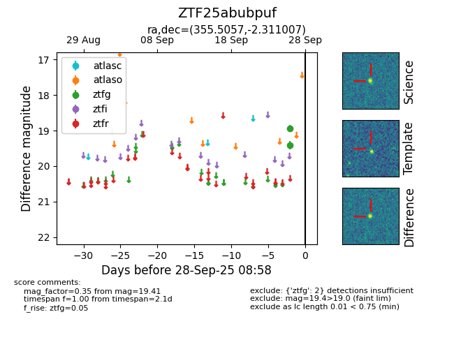

FINK: ZTF25abubpuf
Lasair: ZTF25abubpuf
ALeRCE: ZTF25abubpuf
ZTF25abubpuf (ztf,fink)
equatorial (ra, dec) = (355.5057,-2.31101)
galactic (l, b) = (86.1735,-60.13176)

last ztfg=19.41
2 ztfg detections